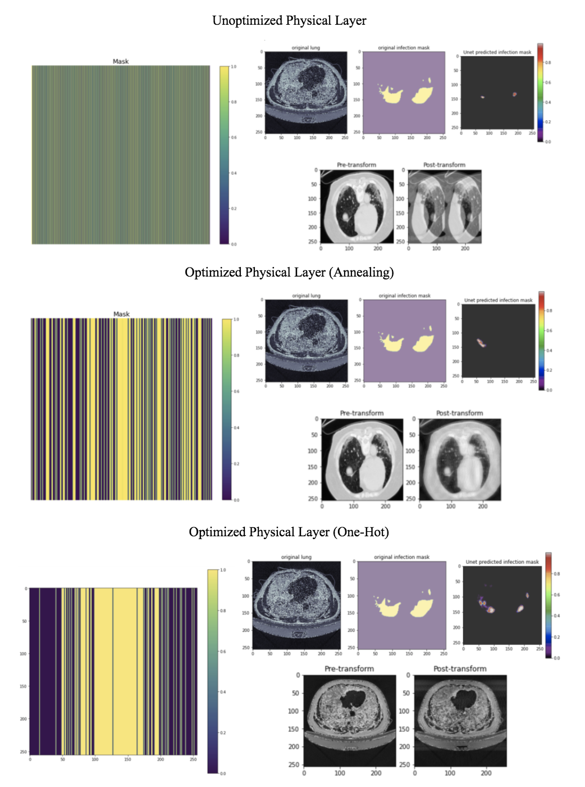

| Paper PDF |

|
In the ongoing COVID-19 pandemic, computer tomography (CT) scans are being utilized to confirm COVID-19 diagnoses for patients who have already tested positive and to localize the infection within the lungs. However, given that CT can expose patients to potentially dangerous levels of ionizing radiation, this project aims to implement deep learning on a physical layer such that the optimized physical layer yields accurate COVID-19 segmentation results for CT scanners with lower radiation. Decreased radiation was modeled through sub-sampling the original images in the Fourier space, and the Fourier transform served as a proxy for the radon transform in CT image reconstruction. Two optimization techniques, annealing and one-hot relaxed categorical distribution, proved effective in improving segmentation precision, intersection-over-union, and recall scores when compared to naive sub-sampling techniques. As expected, image segmentation on these sub-sampled images performed slightly worse when compared to the original images, but there were promising trends in annealing precision scores and overall IOU patterns. Future work should expand on these preliminary findings to investigate the effectiveness of these optimization techniques on the radon transform. |
|
|
| Paper: |
| Code and Data: |